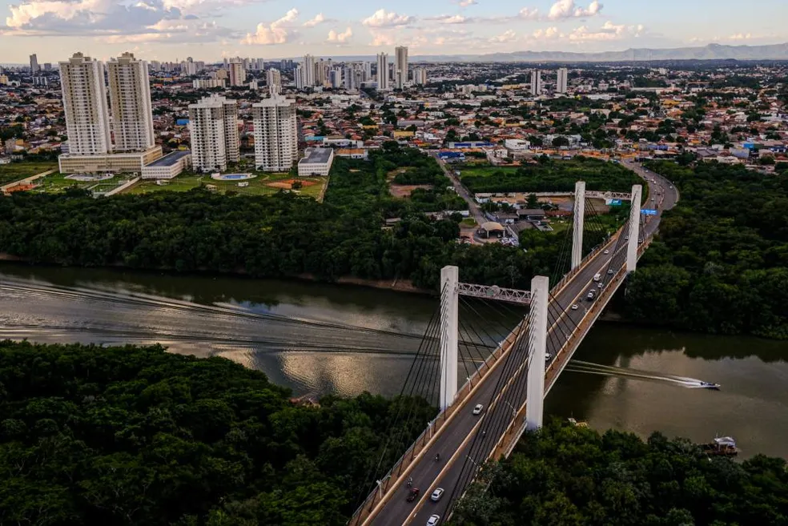
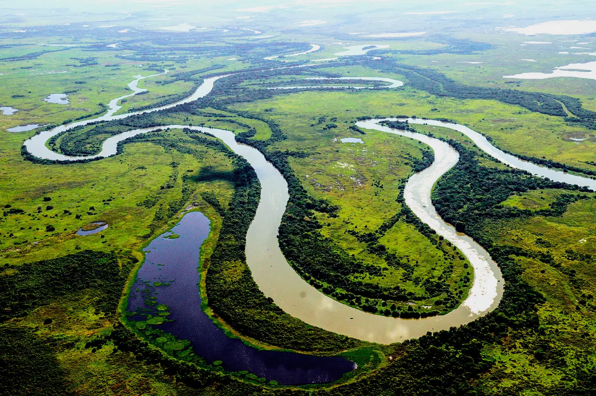
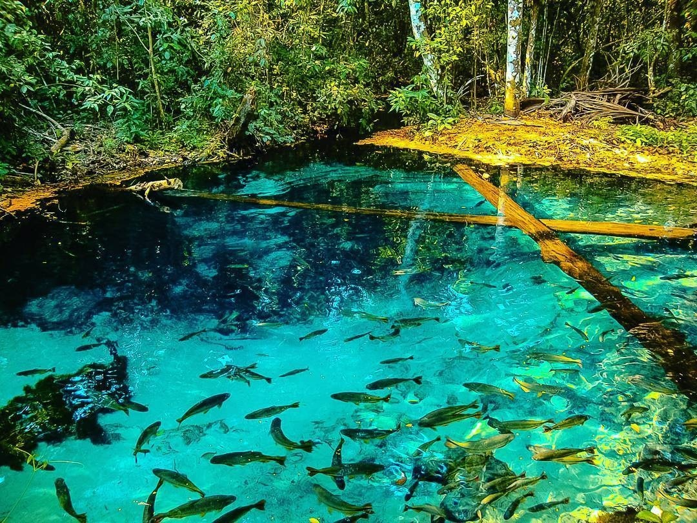

Mato Grosso, estado localizado na região Centro-Oeste do Brasil, é conhecido por sua exuberante natureza, incluindo o Pantanal, a Amazônia e áreas de preservação ambiental. Além disso, o estado possui cidades históricas e culturas indígenas ricas. Aqui estão alguns dos principais pontos turísticos de Mato Grosso:
Bem-vindo ao Mato Grosso

Cuiabá: A capital de Mato Grosso é um ponto de partida comum para explorar as belezas naturais do estado. A cidade possui a Catedral Basílica do Senhor Bom Jesus de Cuiabá, a Praça Alencastro e o Mercado Municipal, onde você pode experimentar a culinária local.

Pantanal: Uma das maiores planícies alagadas do mundo, o Pantanal é uma área de grande biodiversidade e é famoso por sua vida selvagem. É possível fazer safáris de barco ou a pé para observar jacarés, capivaras, aves exóticas e, ocasionalmente, onças-pintadas.

Chapada dos Guimarães: Localizada perto de Cuiabá, a Chapada dos Guimarães é um parque nacional com impressionantes formações rochosas, cânions, cachoeiras e trilhas. Destaques incluem o Morro de São Jerônimo, a Cachoeira Véu de Noiva e a Cachoeira dos Namorados.

Nobres: Uma região de ecoturismo, Nobres é conhecida por suas águas cristalinas, rios e cachoeiras. Os visitantes podem fazer flutuação nos rios, mergulho em nascentes, passeios de caiaque e apreciar a beleza natural da região.